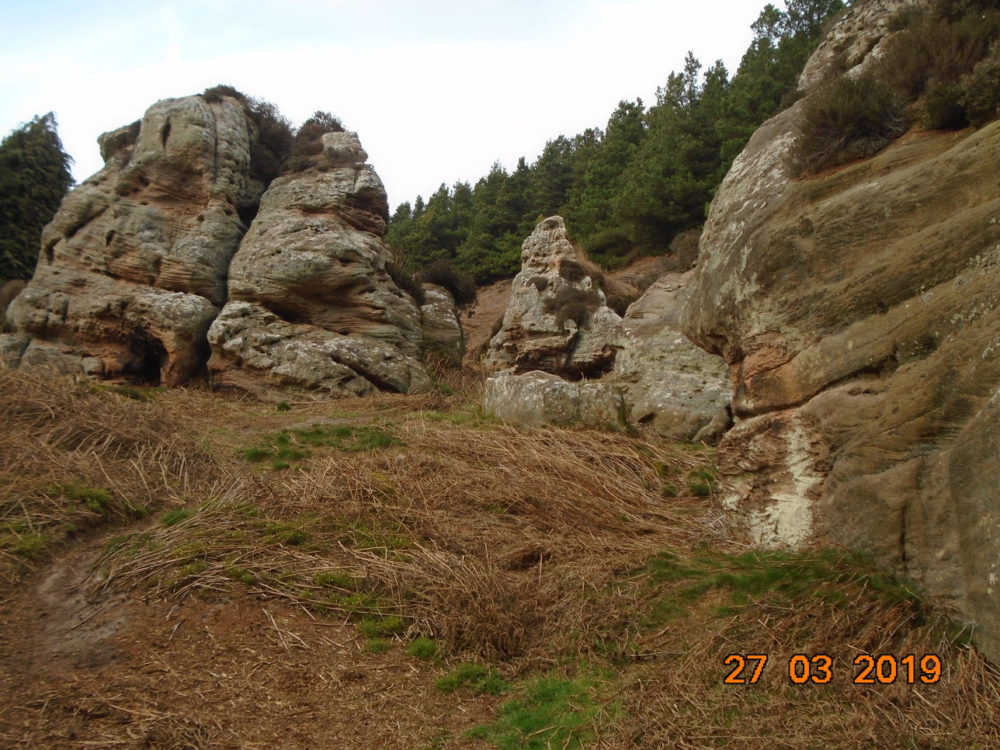

The butterfly season is back � wonderful! I saw good numbers of Small Tortoiseshell and Peacock butterflies in Newcastle Great Park last week. On a sunny day their small shadows may be the first indication of their presence.
Both these species hibernate as adults � which is why they are the first to be seen each year. Commas do as well but they are much less common � they only started breeding in Northumberland around 2000.
Small Tortoiseshells had a poor year in the region last year. We can only hope that this one is better for them. They and Peacocks do not live in colonies but move through the countryside travelling between 05.Km and 1km per day. Peacocks are moving in a northerly direction at the moment. Sheltered sunny hedgerows at around midday are where you are most likely to see them.
I heard my first chiffchaff in KP on 7 March. They are now to be heard singing their hearts out in almost every piece of woodland. Some will stay to nest here but many are on their way north. Willow warblers are normally the next to arrive � any day now � soon followed by Blackcaps and Garden Warblers.
Palmate Newt
I saw the Palmate Newt (I think) on a forestry track in Redesdale Forest in mid January. It was not moving but was still alive. The temperature was hovering around freezing. Palmate Newts don�t actually hibernate but come out on sunny days to forage. They hunt frog tadpoles at this time of year.
Redesdale Forest contains many miles of quiet forestry tracks. A good place to park is by the small church just south of Byrness on the A68 (NT 771023). From here you can walk in and around the forest to both the north and south of the A68.
Cockenheugh Rock Pinnacles
An enjoyable walk at any time of year is from the St Cuthbert�s Cave car park in north Northumberland (NU 051350). The cave footpath can be followed along the edge of the wood to the unusual and much eroded rock pinnacles at Cockenheugh. A good place to take children perhaps � there are small caves to explore. Climbing Corydalis is an attractive pale cream flower that grows abundantly there. It grows in rocky, woody areas with acidic soils.
Climbing Corydalis
There is stile over the fence above St Cuthbert�s Cave. This gives access to the moorland. The ridge of Greensheen Hill (marvellous views of the Cheviots and the coast) can be followed to Holburn Lake. This is very popular with Black-Headed gulls. In winter a good range of winter visiting ducks and geese can be seen here. This walk can be combined with a visit to Holy Island.
A walk that I think I have recommended before starts at the Forestry Commission car park near Holystone (NT 948027). A little way along the road, towards the Otterburn ranges, there is a fingerpost sign to North Yardhope.
Yardhope Oaks
The walk goes through the beautiful Yardhope oaks. This is classified as ancient, semi natural woodland � continuous tree cover since 1600.
On the walk you will pass through areas containing common reed, juniper and bog myrtle. Bog myrtle is in flower at the moment. The male catkins are hard, scaly and a rich red colour. The female catkins are on separate bushes and are smaller.
Bog Myrtle
An interesting feature of the walk is the large wood-ant nests that you meet. They are now heaving with life as the industrious ants go about their spring tasks. The outside of the nest is a thatched mound. Inside there is a complex labyrinth of tunnels and chambers. The ants feed on honeydew secreted by aphids, and forage high into the trees. The picture shows that a fox has chosen to make a territory marking poo deposit on the top of the mound. There can be up to 250,000 ants in the colony. They aggressively defend it when they need to.
Wood Ant Nest
If you do the walk during May you may be lucky enough to see some Green Hairstreak butterflies. They live in small colonies and like sheltered upland places with bilberries.
The rich variety of the flora in this area is thought to be because it has never been intensively farmed. For several centuries border raiders made this a too dangerous place to dwell for long.
John Wilson, 2.4.2019